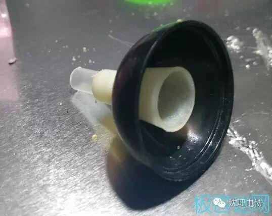

简单易做但很漂亮的光纤灯
简单易做但很漂亮的光纤灯

光纤灯是以特殊高分子化合物做为芯材，以高强度透明阻燃工程塑料为外皮，可以保证在相当长的时间内不会发生断裂，变形等质量问题，寿命至少10年。由于采用了高纯度芯材，从而有效地降低了光线传输中的衰减，达到了光线的高效传输，因其具有高纯度，低衰减，安装方便。可靠性、安全性、环保性、灵活性、完整性、能产生五颜六色，如梦如幻的视觉效果及无紫外线、低热量、无电伤害、使用寿命长、色彩变幻丰富、良好的耐久性和可塑性等特点。所以被视为是一种替代现行装饰照明手段的理想材料。
制作材料
焊锡、剥线钳、双面胶、光纤、电池盒、电烙铁、发光二极管（我用的是可变色的）、导线（后来证实如果电池盒上的导线够长，可不用）、开关、打好洞的小瓶子（用来装发光二极管的）、一个容器（装电路的）、一小段塑料管、白色橡皮套（下图）
电子部分：
1.将发光二极管焊在电池盒和开关上（注意正负极）
2.把开关的另一个引脚连接负极
总体图：
开开试试：
装饰部分：
1.将发光二极管装入打好洞的小瓶子的最底部（小瓶子的瓶底+瓶身）
2.（仅限我这种小瓶子）将中部的绿片盖到小瓶子的瓶底+瓶身上
3.将白色橡皮套和一小段塑料管连接
4.将黑色盖子（瓶盖）和 
5.将发光二极管穿入”瓶盖”中，压实
6.开开试试：
7.在泡沫盒上定位
8.双面胶伺候
9.粘在指定的位子上
10.开关直接压下去
11.透明胶固定（我家没有热熔胶枪）
12.在里放光纤
13.OK！
效果图：
继续滑动看下一个